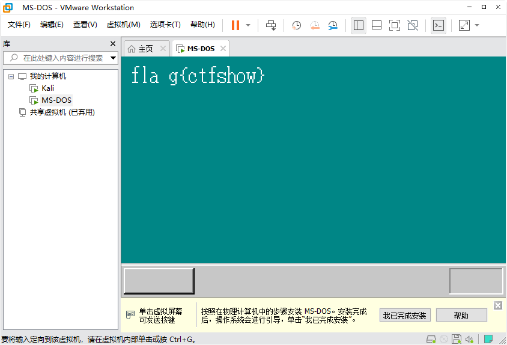

CTFshow misc2 WP
2020-12-04下载附件得到file文件，根据题目中提到“软盘”，将文件放入DiskGenius中查看，可以看到里面包含文件“HARIBOTE.SYS”，百度了下这个文件名，有关于“自制操作系统”，顺便看下16进制数据，发现写着FAT11
事实上是没有FAT11这种格式的，看到DiskGenius已经自动识别为FAT12了。
于是修改为FAT12后保存
猜测这个文件可能是自制的操作系统，那么使用VMware虚拟机能否打开呢？使用VMware新建一个虚拟机，系统版本可选择MS-DOS，一路下一步即可，虚拟机新建好后，选择“编辑虚拟机设置”，添加软盘驱动器，选择软盘映像文件为修改后的file文件

开启虚拟机后即可得到flag
